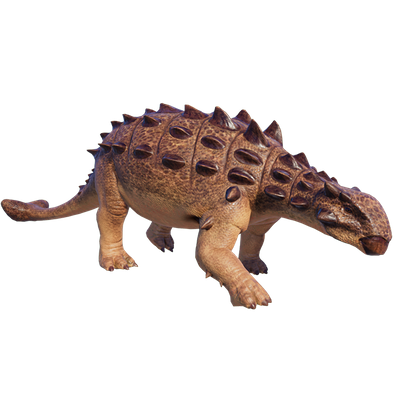

Useful Website
Euoplocephalus is one of the largest ankylosauridae at around 7m in length and weighing two tonnes, and feeds on ground-level plants with its tapered beak. It is best known for its clubbed tail, armour plates on its back and horns at the base of its head – all of which help Euoplocephalus to protect itself from predators. In fact, the name Euoplocephalus translates to ‘well-armoured head’.
